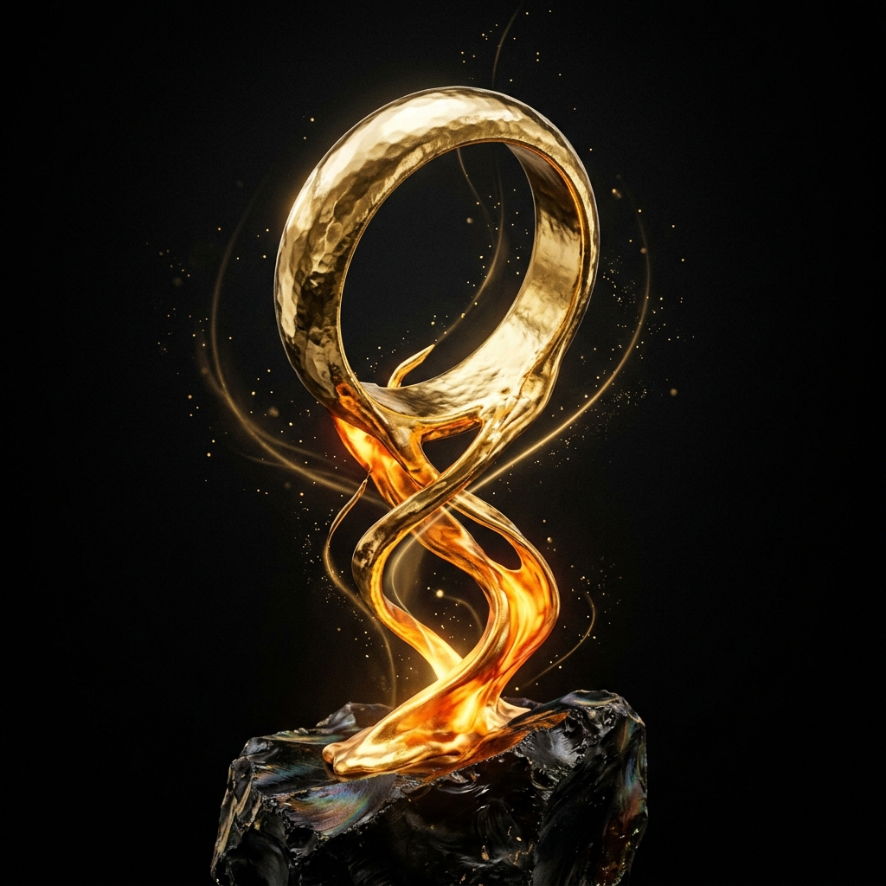
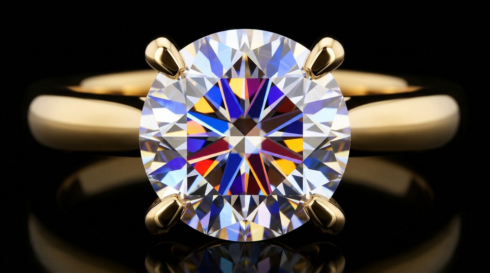
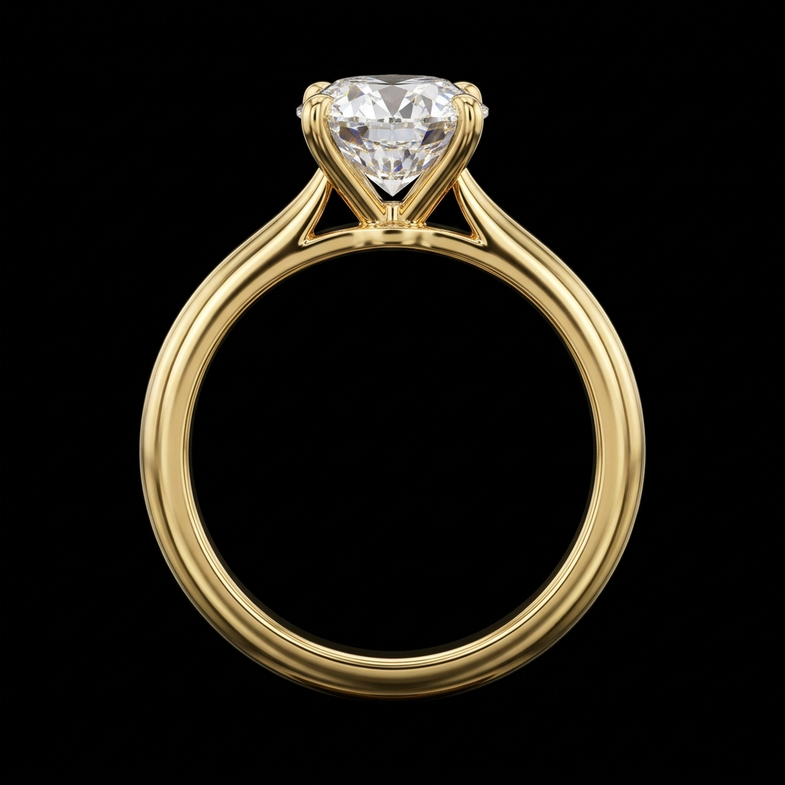

Cada pieza es forjada a mano por maestros orfebres con oro certificado de 18 quilates y diamantes de corte superior. Explora nuestras colecciones o agenda una sesión privada en nuestro atelier.
Alta orfebrería en oro de 18 quilates y diamantes
Visitas privadas bajo cita previa en nuestro atelier de Condado, San Juan.